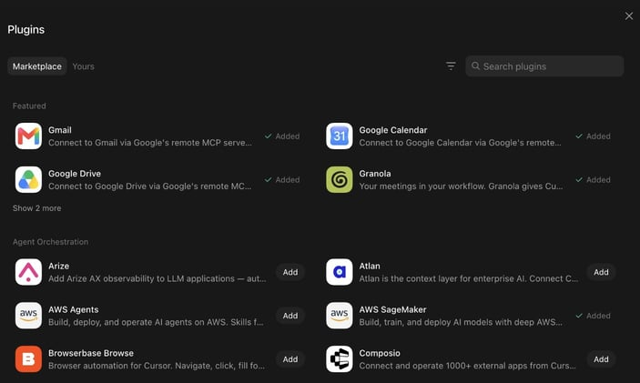

Official guides · 14/27
Grok Bot for PMs
For the first time, a PM can have a team that reports to them. Attention lists, shipping software, and the bots I actually run.
One of the open secrets of product management is that most PMs don't actually manage anyone.
PMs generally manage a product, and will work across many people and teams (design, eng, data science, marketing, support) to achieve a goal. The reason the "mini-CEO of the product" trope is BS is because no one reports to (or has to listen to!) said mini-CEO.
In 2026 the role of the PM is very much in flux, as is the product toolchain. There are now many tools out there that help PMs expand from "idea guy" to full-stack product, design, eng, and GTM builder.
At SpaceXSI, our product team ships code, prototypes new ideas, and works in small teams to build ambitious products. I've tried many AI coding tools and general knowledge-work agents for PM work, and Grok Bot (xAI's AI assistant that comes with its own computer) has definitely been the biggest change to my workflow this year.
I've been using Grok Bot internally for a few months ahead of launch to build the product. It definitely comes with a learning curve, but once you figure it out it's very empowering and fun to use if you love to build.
What is Grok Bot? Grok Bot is a team of always-on agents with their own computer that can learn and amplify your work. So for perhaps the first time, if you're a PM you can now have a "team" (of agents) that reports directly to you and helps you ship.
This is the short version of how I've been using Grok Bot as a PM at SpaceXSI. Below is a bit more expansive on what's worked, what hasn't, and some of the design decisions you might think about as a PM getting started with Grok Bot.
A few PM-y Grok Bot use cases
Priorities → attention list
Many PMs create weekly goals or priorities that quickly go stale. Rather than creating a "priority list" (which will become outdated throughout the chaos of a day) I've started to have Grok Bot follow my attention across Slack (a work chat app), email, and meetings / Granola to create something different: an "attention list."
Am I active in a bunch of incident channels? Am I working with the recruiting team to close a candidate? Has someone sent me a launch blog post to review? My Chief of Staff sees all this work happening and can maintain an implicit priority list as I work.
PMs often work across a bunch of different teams and contexts. I've found that what I'm actually talking about and doing throughout the day is a much better live view of what matters than trying to keep a list of priorities updated.
This feels like a new type of work primitive, the "attention list." It differs from a set of goals, priorities, or a to-do list in that it is emergent from your work and attention. I've found it to be useful in two ways:
- Agents can apply the attention list as a filter. Throughout the day there are thousands of Slack messages and emails that can distract or need me, so agents can use this to guide my attention to threads relevant to what I'm focused on.
- You can compare stated priorities and goals vs. what I'm actually focused on.
To set this up: "Create an attention list: every hour, review email, Slack, Granola, and calendar and create a succinct set of projects I'm focused on and their current state, what needs to happen next."
To use: "Review my attention list and archive any emails that are not relevant to my focus list." "Where did I spend time this week that I can offload to an agent going forward?"
Research new product ideas
Product teams have an ever-growing dataset that is useful for understanding new products or gaps in existing products. Every customer meeting is recorded and transcribed with Granola and Gong. We're in customer Slack channels where product feedback is streaming in.
Our incredible user researcher Stan has built a database with every interview, user insight, and synthesis. Usage and subscription data lives in Databricks. Support tickets live in Plain or Intercom. Complex product decisions are documented in Notion (a notes and database app).

Research across customer contextThe challenge is making all this raw context legible to agents, and using it to inform and shape product direction going forward. Which of our recently onboarded enterprises are using a given product feature? Where in the funnel are our customers getting stuck? Agents can now answer these questions and inform product direction in much more holistic ways by synthesizing info across raw sources.
To set this up: make sure you've enabled plugins for all the core tools where customer context lives, and authenticated into any system on the VM that doesn't have an MCP (Model Context Protocol, a standard way to plug apps into an AI).
Shipping
The thing I've been most surprised by is how good Grok Bot is for actually shipping software. Grok Bot now represents a double-digit percent of our internal merged PRs.
Grok Bot agents can use Cloud Agents, operating in an environment that's equipped with the codebase, dependencies, secrets, and everything agents need to test their work.
For a PM, this allows you to operate at a higher order of abstraction. Rather than managing individual threads or juggling many individual agents, you can express much more sophisticated goals to a Grok Bot agent who can decompose and allocate work to other agents, then review and integrate the outputs in new ways.
With Grok Bot, frontier models, and the right cloud agent environments, PMs can take on much more ambitious builds. More on how I've set up my eng agent team below.
My Grok Bot team
- Chief of Staff: calendar, Slack, inbox. The only generalist. Stays quiet if nothing changed.
- Eng mgr (Emily): does not code. Breaks work down, delegates to IC eng agents, checks the output against the goal.
- Eng (×5): eng agents spin Cloud Agents and receive work from the EM.
- Data analyst (Ashley): warehouse, charts, tracking goals. Reviews the dash every morning.
- PM Pete: RFCs, research, feedback, docs. Sits in the work. Hardware too.
- Recruiter: finding undiscovered talent and managing recruiting loops.
Chief of Staff
This is the one on my calendar, Slack, and inbox. General day-to-day. Owns the attention list.
Example: Chief of Staff reads Slack throughout the day and keeps my focus list up to date. Hourly it archives Gmail unless the thread names me and maps to that list. Last week it sent holds and asked me to pick a start time. I said 10am. It moved the hold.
Trick: one of the biggest complaints with LLMs is that they are bad at writing. Have it write a personal style guide from your outbox and Slacks, then sample the exact thread before it drafts so it sounds like you, not a bot.
I still keep final review for any external email sends, purchasing anything, or destructive actions like deletes.
Eng mgr
Sadly, my EM is not supposed to code! Just manage.
EM is responsible for breaking down technical work, delegating and managing IC eng agents, and validating outputs against the goal.
I had my EM onboard by reading all of @danielstjules's Slacks, to learn what great looks like.
Many engineers
EM delegates work to eng IC agents. I currently have a team of five, but you can have as many as you want.
These eng agents use Cloud Agents under the hood, can manage many of them at once, validate and test their outputs, and coordinate work with each other.
It's agents all the way down.
Data science and analytics
This is the one I use the most. Hooked up to the warehouse, I've asked my data analyst to mostly speak to me in well-synthesized charts.
Throughout the day, I'll have a bunch of different questions that could be answered with data. Previously these questions would just go unanswered, because the friction of asking and answering them was too high.
I don't look at this as displacing a traditional data science or data analytics team. We still have many hard, ambiguous questions that need to be answered with high degrees of taste and interpretation. But for more tactical questions, or questions that have been answered before but need to be refreshed or cut slightly differently, I'm now turning to Grok Bot.
PM Pete
I've wanted a product sidekick forever. Most tools fail because they are not in the mix. PM Pete is my go-to for general product exploration: new product ideas, research, feedback, docs. RFCs and product reviews that sound like a PM, not an intern summarizing Slack.
Example: turn a channel, thread, or DM discussion about a feature split into an RFC (P0–P2) with quotes.
We've even started hacking on some hardware together. PM Pete researched a missing Raspberry Pi part and ordered it off Amazon, then taught me how to wire it up.
Why not one agent?
Probably the biggest design question is whether to just have one omniscient agent or many specialized agents. The way I use Grok Bot cuts against the current paradigm of the blank text box with a general-purpose agent that in theory should be able to do everything.
I've found the partitioning of workloads to specialized agents useful for a few reasons:
- Referenceability. You know who does what.
- Parallelism. Many working at once on discrete tasks, coordinating on shared ones.
- Scoped memory. They learn different things on the job.
Outside of that, I generally find having these different agents more fun to work with.
A few lessons
- Named agents, separate memory. Each agent has a broad goal or mission but scoped memory relevant to their type of work. Chief of Staff should not be debugging computer-use evals. The eval agent is not archiving my mail.
- Agents learn on the job. Agents can learn from your past work, and you can continue to teach them things. "Read my past Slack messages and develop a Slack style guide for me" is the highest-leverage instruction I've found.
- Agents shouldn't be noisy. Grok Bot agents bias to action but can also over-communicate. Ask them to stay quiet unless something needs your attention to reduce distraction and noise.
- Human on the important stuff. For now, I continue to send most messages and edit most docs and ideas. Both to de-slopify, and because I've found people want to know that the messenger spent some time thinking through any ask.
If you're a PM using Grok Bot, I'd love to learn what agents you're using so I can try them out.
Written by Kevin Niparko
Source: https://x.ai/bot/guides/grok-bot-for-pms
← Grok Bot for Performance Marketing Grok Bot for Post-Sales →